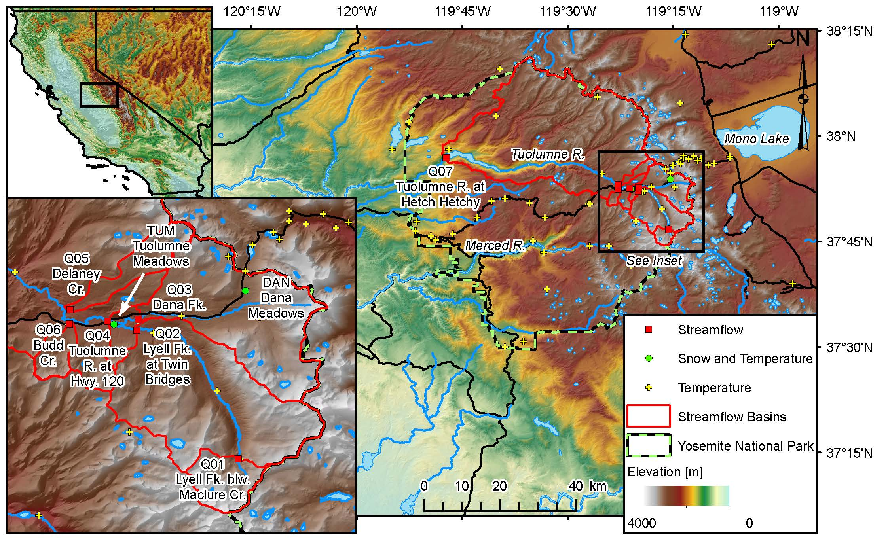

These data are offered without warranty. Use at your own risk. We ask that you send an e-mail to
Jessica Lundquist at jdlund@uw.edu if you decide to use the data. Also, please let Dr.
Lundquist know if anything looks odd, as we are continuously trying to improve the data quality
control.
This paper was published as a data paper
at Water Resources Research, accepted online September
2016. Authors include Jessica D. Lundquist, James W. Roche, Harrison Forrester, Courtney Moore,
Eric Keenan, Gwyneth Perry, Nicoleta Cristea, Brian Henn, Karl Lapo, Bruce McGurk, Daniel R.
Cayan, and Michael D. Dettinger
Abstract
Regions of complex topography and remote wilderness terrain have spatially-varying patterns of
temperature and streamflow, but due to inherent difficulties of access, are often very poorly
sampled. Here we present a dataset of distributed stream stage, streamflow, stream temperature,
barometric pressure, and air temperature from the Tuolumne River Watershed in Yosemite National
Park, Sierra Nevada, California, U.S.A. for water years 2002 to 2015, as well as a
quality-controlled hourly meteorological forcing time series for use in hydrologic modeling.
We also provide snow data and daily inflow to the Hetch Hetchy Reservoir for 1970 to 2015. This
paper describes data collected using low-visibility and low-impact installations for
wilderness locations and can be used alone or as a critical supplement to ancillary datasets
collected by cooperating agencies, referenced herein. This dataset provides a unique
opportunity to understand spatial patterns and scaling of hydroclimatic processes in complex
terrain and can be used to evaluate downscaling techniques or distributed modeling. The paper
also provides an example methodology and lessons learned in conducting hydroclimatic monitoring
in remote wilderness.
Citation: Lundquist, J. D., Roche, J. W., Forrester, H., Moore, C., Keenan, E., Perry, G.,
Cristea, N., Henn, B., Lapo, K., McGurk, B., Cayan, D. R. and Dettinger, M. D. (2016), Yosemite
hydroclimate network: Distributed stream and atmospheric data for the Tuolumne River watershed
and surroundings. Water Resour. Res., Accepted Author Manuscript. doi:10.1002/2016WR019261
Supplemental Material
Guide
to all of the sites, methodology, data processing, and rating curve development associated
with this data.

Processed Data for Forcing and Evaluating a Hydrologic Model
Dana Meadows forcing dataset used in SUMMA modeling tests (Cristea et al., 2020, submitted)
Streamflow:
Best estimate of half-hourly
discharge for 6 streams
in the Upper Tuolumne Watershed for water years 2002 to 2015. In zipped ascii format (separated
by commas).
README file
describing the locations and processing of the above data.
Snow Water Equivalent:
Tuolumne and
Dana manual snow course measurements of snow water
equivalent for water years 1970 to 2015, as well as
daily snow pillow measurements of SWE for both
locations for water years 1980 to 2015. In ascii format (separated by commas).
README file describing the location, accuracy, and processing of the above data.
Detailed Stream Data with 95% Confidence Intervals and Raw Data Files
Q01:
Raw and corrected stage data, raw stream temperature data, and estimated discharge data for
Lyell Fork of the
Tuolumne River below Maclure Creek for water years 2005 to 2015. In zipped ascii format
(separated by commas).
README file describing the
location, accuracy, and processing of the above data.
Manual field measurements at
Lyell Fork below Maclure of stage (or tapedown), water temperature, conductivity, and
discharge, used to create the rating curves in the above files.
Q02:
Raw and corrected stage data, raw stream temperature data, and estimated discharge data for
Lyell Fork
of the Tuolumne River above and below Twin Bridges for water years 2002 to 2015. In
zipped ascii format (separated by commas).
README file describing the
location, accuracy, and processing of the above data.
Manual field measurements at
Lyell Fork Twin Bridges of stage, water temperature, and discharge, used to create the rating
curves in the above files.
Manual survey of the cross-section near the
instrument located downstream of the Lyell Fork at Twin Bridges.
Manual survey of the cross-section near the
instrument located upstream of the Lyell Fork at Twin Bridges.
Q03:
Raw and corrected stage data, raw stream temperature data, and estimated discharge data for
Dana Fork of the
Tuolumne River near the Tuolumne Lodge for water years 2002 to 2006. In zipped ascii
format (separated by commas).
README file describing the
location, accuracy, and processing of the above data.
Manual field measurements at Dana Fork
near the Tuolumne Lodge of stage, water temperature, and discharge, used to create the rating
curves in the above files.
Manual survey of the cross-section near the
instrument located near the lodge on the Dana Fork.
Q04:
Raw and corrected stage data, raw stream temperature data, and estimated discharge data for
Dana Fork of the
Tuolumne River near Bug Camp for water years 2006 to 2015. In zipped ascii format
(separated by commas).
README file describing the
location, accuracy, and processing of the above data.
Manual field measurements at Dana
Fork near Bug Camp of stage, water temperature, and discharge, used to create the rating
curves in the above files.
Manual survey of the cross-section near the
instrument located near Bug Camp on the Dana Fork.
Q05:
Raw and corrected stage data, raw stream temperature data, and estimated discharge data for
Tuolumne River
at Highway 120 for water years 2002 to 2015, combining instruments from both above and
below the culvert. In zipped ascii format (separated by commas).
README file describing the location,
accuracy, and processing of the above data.
Manual field measurements of
Tuolumne River at Highway 120 stage and discharge, used to create the rating curves in the
above files.
Manual survey of the cross-section near the
instrument located in the Tuolumne River at Highway 120.
Q06:
Raw and corrected stage data, raw stream temperature data, and estimated discharge data for
Delaney Creek
where it enters Tuolumne Meadows for water years 2008 to 2015. In zipped ascii format
(separated by commas).
README file describing the
location, accuracy, and processing of the above data.
Manual field measurements of
Delaney Creek stage and discharge, used to create the rating curves in the above files.
Manual survey of the cross-section near the instrument
located in Delaney Creek in Tuolumne Meadows.
Q07:
Raw and corrected stage data, raw stream temperature data, and estimated discharge data for
Budd Creek where it
enters Tuolumne Meadows for water years 2002 to 2015. In zipped ascii format (separated by
commas).
README file describing the location,
accuracy, and processing of the above data.
Manual field measurements of Budd Creek
stage and discharge, used to create the rating curves in the above files.
Distributed Air Temperature Data for 2002 to 2005
Site Background and Analysis
Daily temperature data for 62 stations detailed in
Lundquist and
Cayan, 2007, see Fig. 1 and Table 1.
README file describing the accuracy
and processing of the above data.
Site information
including latitude, longitude, and elevation for the 62 stations.
Barometric Pressure Data (Used to Process Stream Data)
Data
Values of relative barometric pressure
in cm of water for water years 2002 to 2015 in zipped ascii format (separated by commas).
Same as above but in .mat format
Data Notes
README file describing the location,
accuracy, and processing of the data above.
Note that the time stamp for these is in UTC, which is 7 hours ahead of summer daylight savings
time in Tuolumne. The time step varies, depending on the instrument used.